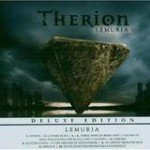

|
|
||
Therion : Lemuria / Sirius B (2004) |
|

http://www.megatherion.com |
Lemuria |
10/10 |
|
El último lanzamiento del grupo sueco Therion es un disco doble, que perfectamente podrían haber sido dos: Lemuria y Sirius B. El resultado es absolutamente grandioso en todo: desde el hecho de ser dos álbums en uno (duran en total unos cien minutos), pasando por la impresionante presentación en la edición de lujo, con un digipack doble, con carátulas y libretos diferentes para cada disco y cuidadas imágenes adornando cada página, hasta el haber contado con la orquesta filarmónica de Praga y el coro mixto de Kühn, así como con varios vocalistas clásicos, lo que hace un total de unos 170 músicos. Therion lleva ya tiempo haciendo una mezcla heterogénea y enriquecedora de heavy metal con música clásica pero es que además, cosa difícil y en la que otras bandas han fallado, son capaces de hacerla integrando una orquesta y un coro de proporciones épicas sin que ese hecho diluya la esencia más heavy del grupo. No voy a describir cada tema, porque realmente la profundidad y variedad de los mismos, y su número, harían de ello una tarea titánica, pero si voy a resaltar lo que más me ha llamado la atención. En Lemuria, "Typhon" proporciona un arranque espectacular, con una base rítmica densa y oscura, una gran variedad de voces, masculinas y femeninas, desde gruñidos de death metal hasta el brillo de una soprano, algunos de los coros más pomposos que he oído munca, y un solo de guitarra bastante original para que no se nos olvide que esto es un disco de heavy metal. El comienzo de "Three ships of Berik" es impresionante, rápido, de ritmo galopante que se mantiene durante toda la canción, variada, con cambios de ritmo y contrastes en las voces. Si esta canción no te convence de que el heavy metal y la música clásica pueden no sólo coexistir sino enriquecerse mutuamente, está claro que nada te convencerá. Los coros de "Quetzalcoatl" crean una atmósfera emocionante y vibrante de una forma que ningún instrumento puede lograr, y son otro ejemplo de cómo incorporar recursos clásicos al heavy metal puede dar grandes frutos. En "An arrow from the sun" vemos un ejemplo magistral de diálogo entre barítono y soprano, de manera muy similar a muchas bandas de metal gótico, pero con un punto más "operístico" incluso que estos grupos. El cierre de Lemuria, "Feuer Overtüre / Prometheus Entfesselt", cantado en alemán, es capaz de ofrecer una melodía inquietante junto a una base rítmica contundente y claramente metalera y aún así sonar como una pieza clásica. Y respecto a Sirius B, la majestuosa sección de metales del principio de "The Blood of Kingu" crea un ambiente perfecto para un tema rápido y cañero, que cualquiera reconocería como heavy, donde la dura voz masculina recibe la réplica por angelicales coros femeninos. En "Son of the Sun" la melodía es llevada de manera maravillosa por una soprano, acompañada por un coro masculino y siempre sobre una guitarra eléctrica muy presente y marcada. "The Wondrous World of Punt" es quizás la pieza más vertiginosa del álbum, acompañada por el doble bombo en algunas partes, y adornada por melodiosos coros que en ningún momento le restan fuerza. El final del disco es fantástico, por la rápida y pegadiza melodía de "Voyage Of Gurdjieff", las complejas capas de voces, los señoriales coros, y el veloz solo de teclados, esta canción podría abrir, por derecho propio, cualquier disco de metal sinfónico. No sólo resulta sorprendente que en un disco doble con 21 temas sea difícil calificar alguno como "de relleno", sino que además Therion podría haber sacado perfectamente dos discos buenos con el material de éste, pero han preferido sacar uno muy bueno. Este disco es la mejor combinación de metal con música clásica que he oído nunca, y que además sean dos discos por poco más que el precio de uno, y el cuidado que se ha puesto en su presentación, hacen de esta una obra que vale la pena comprar y que costará superar. A día de hoy, quizás sólo Therion pueda hacerlo. |
||
- Crítica escrita por Rubén Béjar - |
||